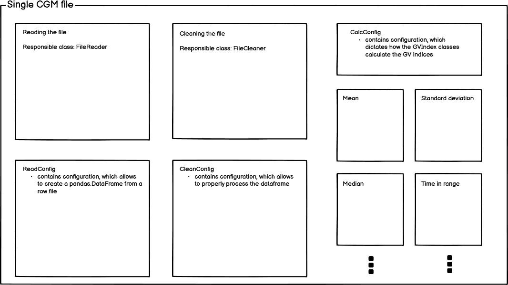

A Quickstart Guide!¶
Are you a programmatically inclined scientist, who faces challenges of dealing with CGM data? Or are you designing a new Python software to deal with CGM data?
If so, then fret not! glyculator-core has all the tools you will need to conduct a basic CGM analysis! glyculator-core provides a set of utilities to deal with data created during Continuous Glucose Monitoring. It covers file reading, simple data cleaning steps and calculations of the most well-known glycemic variability indices.
API design¶
glyculator.core is designed with modularity in mind. In this spirit, it exposes classes, which deal with a single CGM file.
glyculator.core covers three aspects of dealing with CGM data: * reading a single file, * performing a data cleaning step, * calculating glycemic variability indices.
Reading a CGM file¶
Reading a single CGM file with glyculator-core is controlled by a duo of two classes - Reader and ReadConfig.
ReadConfig holds the description of how the file should be read and Reader does the reading.
First, let’s prepare a dummy CGM file.
>>> import pandas as pd
>>> import numpy as np
>>>
>>> np.random.seed(0)
>>> cgm = pd.DataFrame({
... "dates" : pd.date_range("2020/11/19", freq="5min", periods=1000),
... "glucose_values" : np.random.uniform(50, 250, 1000)
... })
>>> print(cgm)
dates glucose_values
0 2020-11-19 00:00:00 159.762701
1 2020-11-19 00:05:00 193.037873
2 2020-11-19 00:10:00 170.552675
3 2020-11-19 00:15:00 158.976637
4 2020-11-19 00:20:00 134.730960
.. ... ...
995 2020-11-22 10:55:00 69.535273
996 2020-11-22 11:00:00 152.984440
997 2020-11-22 11:05:00 237.682404
998 2020-11-22 11:10:00 95.729310
999 2020-11-22 11:15:00 185.428229
[1000 rows x 2 columns]
>>> cgm.to_csv("example_file.csv", index=False)
ReadConfig should be provided information about the columns relevant to the CGM analysis - the date time column number, the glucose values column number and the number of header rows (the rows that do not contain any glucose values).
>>> from glyculator.configs import ReadConfig
>>> from glyculator import FileReader
>>>
>>> read_config = ReadConfig(header_skip=1, date_time_column=0, glucose_values_column=1)
>>> reader = FileReader("example_file.csv", read_config=read_config)
>>> print(reader.read_file())
date-time glucose
0 2020-11-19 00:00:00 159.762701
1 2020-11-19 00:05:00 193.037873
2 2020-11-19 00:10:00 170.552675
3 2020-11-19 00:15:00 158.976637
4 2020-11-19 00:20:00 134.730960
.. ... ...
995 2020-11-22 10:55:00 69.535273
996 2020-11-22 11:00:00 152.984440
997 2020-11-22 11:05:00 237.682404
998 2020-11-22 11:10:00 95.729310
999 2020-11-22 11:15:00 185.428229
[1000 rows x 2 columns]
This in itself is not that impressive, but FileReader and ReadConfig can also work with split date and time columns. it also supports reading all types of comma-seperated files - it tries to derive the structure of the file from its extension and first couple of rows, so you don’t have to specify those things!
Let’s try to create a little more complex of an example:
>>> lines = [
... "ID,,,,,",
... "dt,glucose,date,time,,",
... ",78,09/08/2019,08:00:00,,",
... ",80,09/08/2019,08:05:00,,",
... ",83,09/08/2019,08:10:00,,",
... ",79,09/08/2019,08:15:00,,",
... ]
>>> with open("example_file2.csv", "w") as f:
... for line in lines:
... _ = f.write(line)
... _ = f.write('\n')
You could create a new ReadConfig object to describe this file, but let us reuse the old ReadConfig.
>>> reader.set_file_name("example_file2.csv")
>>> read_config.set_glucose_values_column(1)
>>> read_config.set_date_column(2)
>>> read_config.set_time_column(3)
>>> read_config.set_date_time_column(None)
>>> read_config.set_header_skip(2)
>>> reader.read_file()
date-time glucose
0 2019-08-09 08:00:00 78.0
1 2019-08-09 08:05:00 80.0
2 2019-08-09 08:10:00 83.0
3 2019-08-09 08:15:00 79.0
The read file has only the date-time column and the glucose column, despite the original file having additional columns. FileReader also pasted the date column with the time column in a smart way - notice the differences in the formatting.
Cleaning CGM data¶
Calculating glycemic variability indices¶
Cautionary snake
____
/ . .\
\ ---<
\ /
__________/ /
-=:___________/